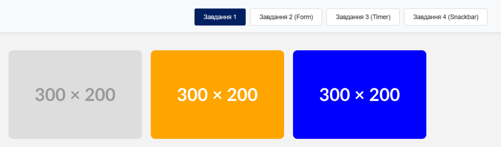
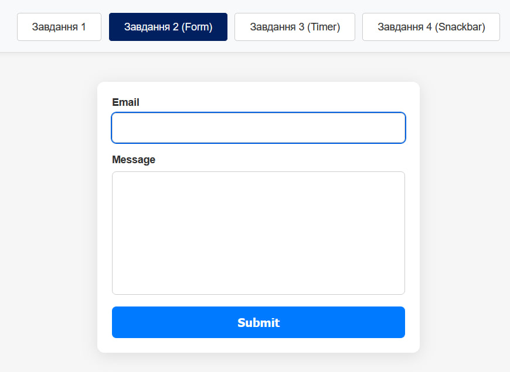
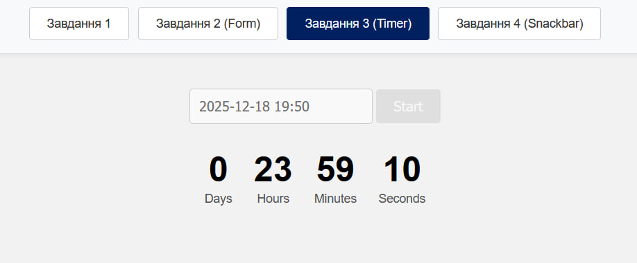
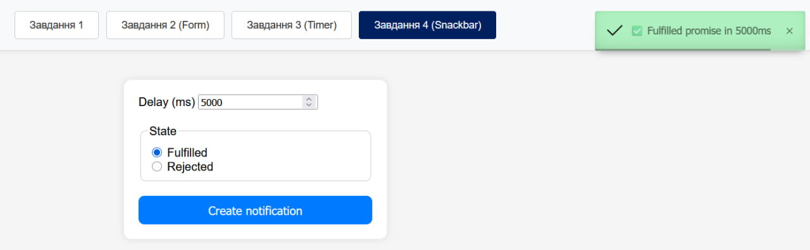
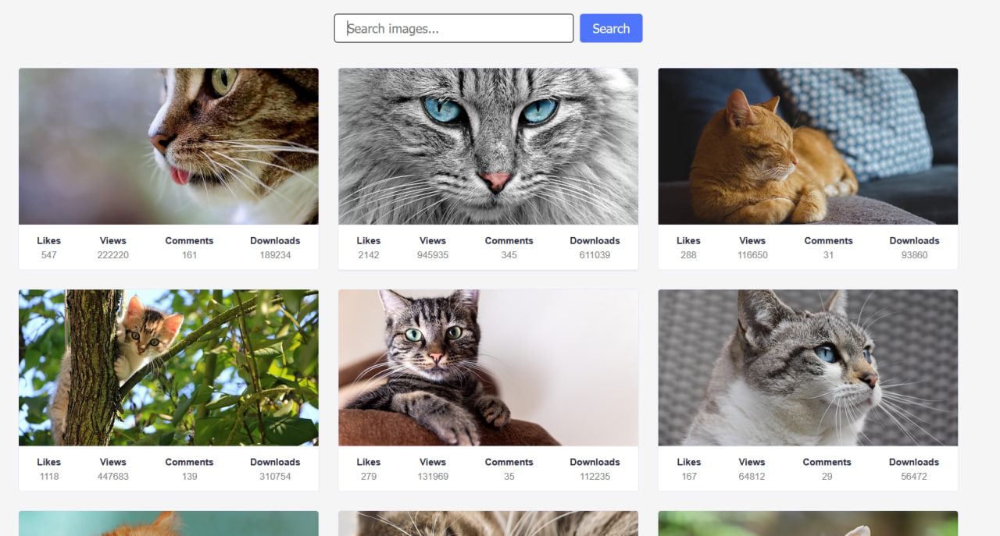

Практична робота №8
Оберіть розділ ліворуч, щоб переглянути вміст.
Тема, Мета, Місце розташування сайту, звіту
Тема: WEB-СХОВИЩЕ. WEB STORAGE API. АСИНХРОННІСТЬ. ПРОМІСИ. ПАГІНАЦІЯ.
Мета: придбати практичні навички роботи створення модального вікна; повторити процес створення макету; закріпити навички роботи з делегуванням подій; придбати практичні навички роботи з WEB STORAGE API та реалізації пагінації.
Посилання на репозиторії:
Посилання на живі сторінки:
ЗАВДАННЯ 1-4
Завдання 1: Галерея зображень (Index.html)
Опис: Створено додаток для пошуку зображень за допомогою Pixabay API. Реалізовано асинхронні запити за допомогою бібліотеки Axios. Інтерфейс включає форму пошуку, галерею зображень з можливістю перегляду у модальному вікні (SimpleLightbox) та кнопку "Load More" для пагінації результатів. Використано бібліотеку iziToast для повідомлень користувачеві.
Скріншот результату Завдання 1 (Галерея зображень)
Завдання 2: Форма зворотного зв'язку (2-form.html)
Опис: Реалізовано форму, яка зберігає введені дані (email та повідомлення) у локальному сховищі браузера (localStorage). Це дозволяє не втрачати дані при випадковому перезавантаженні сторінки. При сабміті форма очищується, а дані видаляються зі сховища.
Скріншот результату Завдання 2 (Форма зворотного зв'язку)
Завдання 3: Таймер зворотного відліку (1-timer.html)
Опис: Створено таймер, що відраховує час до обраної дати. Для вибору дати використано бібліотеку flatpickr. Скрипт обчислює різницю між поточною та обраною датою і оновлює інтерфейс (дні, години, хвилини, секунди) щосекунди за допомогою `setInterval`. Додано валідацію дати (не можна обрати дату в минулому).
Скріншот результату Завдання 3 (Таймер)
Завдання 4: Генератор промісів (2-snackbar.html)
Опис: Реалізовано форму для створення промісів. Користувач вводить затримку в мілісекундах та обирає стан (Fulfilled або Rejected). Після натискання кнопки створюється проміс, який через заданий час виконується або відхиляється, виводячи відповідне спливаюче повідомлення через бібліотеку iziToast.
Скріншот результату Завдання 4 (Генератор промісів)
ЗАВДАННЯ 5: Пошук зображень (Image Search)
Опис виконання:
Створено повноцінний веб-застосунок для пошуку зображень з використанням Pixabay API. Проєкт реалізовано з використанням збірника Vite та модульної структури JavaScript.
Основний функціонал:
- Форма пошуку з валідацією (не можна відправити порожній запит).
- Виконання асинхронних HTTP-запитів до API Pixabay.
- Відображення результатів у вигляді адаптивної галереї карток.
- Інтеграція бібліотеки SimpleLightbox для перегляду великих зображень у модальному вікні.
- Використання бібліотеки iziToast для сповіщень про помилки або відсутність результатів.
- Індикатор завантаження (Loader) під час виконання запиту.
Скріншот результату Завдання 5 (Інтерфейс пошуку зображень)
Основні моменти реалізації (Code snippets):
Нижче наведено ключові частини коду, що відповідають за логіку роботи додатка.
1. HTTP-запит до API (api.js)
const API_KEY = '53639112-c3579581a5487e725b0ffc9a5';
const BASE_URL = 'https://pixabay.com/api/';
export async function fetchImages(query) {
const params = new URLSearchParams({
key: API_KEY,
q: query,
image_type: 'photo',
orientation: 'horizontal',
safesearch: 'true',
});
const url = `${BASE_URL}?${params}`;
const response = await fetch(url);
if (!response.ok) {
throw new Error('Failed to fetch images');
}
const data = await response.json();
return data.hits;
}
2. Обробка форми та рендеринг (main.js)
import { fetchImages } from './api.js';
import iziToast from 'izitoast';
import SimpleLightbox from 'simplelightbox';
const form = document.querySelector('#search-form');
const gallery = document.querySelector('.gallery');
let lightbox = new SimpleLightbox('.gallery a', { /* options */ });
form.addEventListener('submit', async event => {
event.preventDefault();
const query = event.target.elements.query.value.trim();
if (!query) {
iziToast.warning({ title: 'Warning', message: 'Please enter a search term!' });
return;
}
gallery.innerHTML = '';
showLoader();
try {
const images = await fetchImages(query);
if (images.length === 0) {
iziToast.error({ title: 'Error', message: 'Sorry, there are no images matching your search query.' });
return;
}
renderGallery(images);
lightbox.refresh();
} catch (error) {
iziToast.error({ title: 'Error', message: 'Something went wrong!' });
} finally {
hideLoader();
}
});
ВИСНОВКИ
Під час виконання практичної роботи №8 я закріпив навички роботи з асинхронним JavaScript та Web API. Зокрема:
- Навчився працювати з HTTP-запитами до зовнішніх сервісів (Pixabay API) за допомогою бібліотеки Axios та обробляти відповіді.
- Освоїв роботу з Web Storage API (localStorage) для збереження стану додатку між перезавантаженнями сторінки.
- Реалізував роботу з часом та інтервалами в JavaScript на прикладі таймера зворотного відліку.
- Поглибив розуміння роботи Promisses (Промісів), їх станів та обробки результатів (resolve/reject).
- Отримав досвід підключення та використання сторонніх бібліотек (SimpleLightbox, flatpickr, iziToast) для покращення функціоналу та UX веб-застосунків.